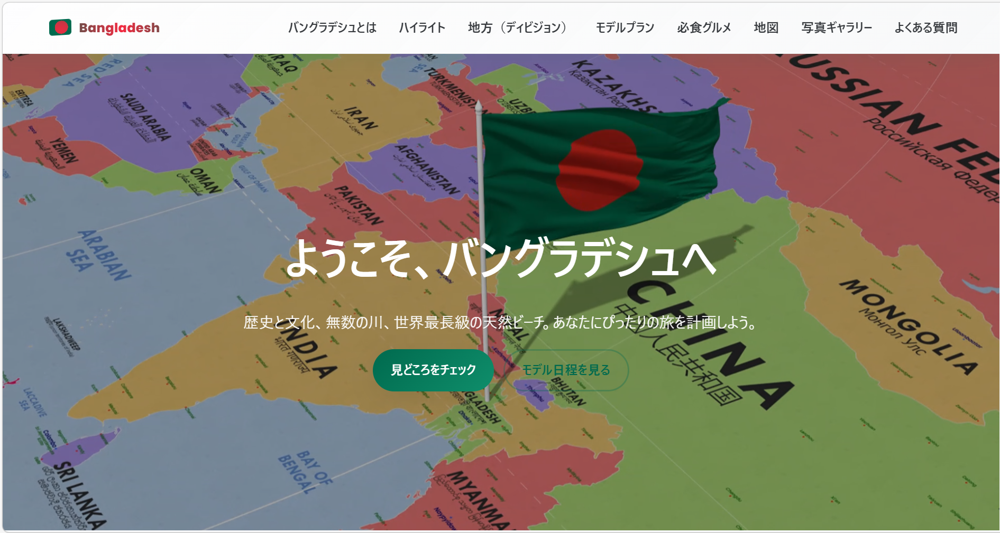
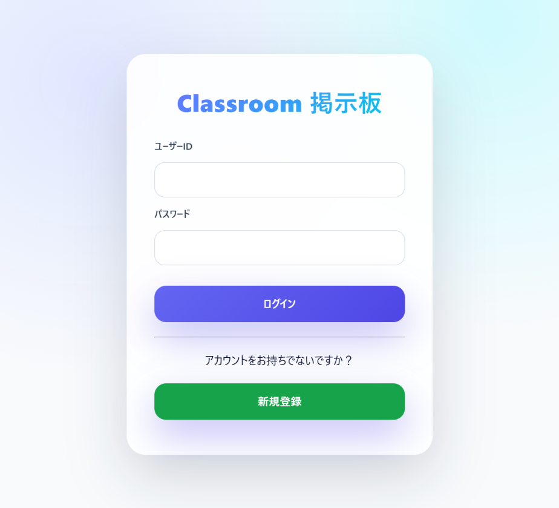
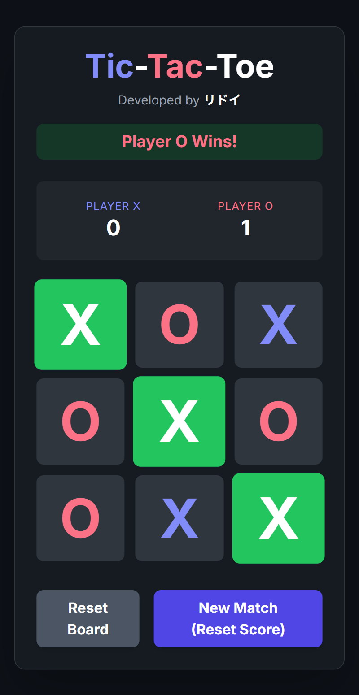

フロントエンドプロジェクト
バングラデシュ旅行ガイドサイト
バングラデシュの観光情報を分かりやすく伝えるために制作した旅行ガイドサイトです。複数ページ構成で、文化・観光地・写真を整理し、見やすいUIを意識しました。
HTMLCSSJavaScript
プロジェクトを見る

私は現在、専門学校東京テクニカルカレッジで情報処理を学び、主にWebアプリケーション開発に重点を置いて実践的なITスキルを習得しています。
授業やプロジェクトを通じて、HTML・CSS・JavaScript
・C・Java（Servlet／JSP）・SQLデータベースを用いたWebシステム開発を経験してきました。特に、掲示板システムや小規模SNSアプリケーションの開発に取り組み、機能性だけでなく、使いやすさやコードの可読性・整理にも注意して実装しました。
また、責任感を持って課題に取り組む姿勢と、継続的に学習し続ける習慣を大切にしています。チーム開発では協調性を意識し、円滑なコミュニケーションを心がけてきました。
将来は、これまで培った技術力と学習意欲を活かし、チームやプロジェクトに貢献できる信頼されるITエンジニアになることを目指しています。
フロントエンド技術とJava／SQLを活用し、 モダンでクリーンかつ効率的なWebアプリケーション開発に取り組んでいます。
フロントエンドおよびWeb開発スキルを活かして制作したプロジェクト一覧です。

バングラデシュの観光情報を分かりやすく伝えるために制作した旅行ガイドサイトです。複数ページ構成で、文化・観光地・写真を整理し、見やすいUIを意識しました。

クラス内コミュニケーションの非効率を解決するために開発した掲示板アプリです。投稿・閲覧・返信機能を実装し、Java、JSP、Servlet、SQLでデータ管理を行いました。

JavaScriptのイベント処理とゲームロジックを学ぶために制作したブラウザゲームです。操作性・画面変化・スコア管理を意識して実装しました。
Webサイト制作の基礎を学び、ポートフォリオやUI制作に取り組みました。
学校の授業でWebアプリケーションの仕組みを学び、掲示板アプリを開発しました。
データ登録・検索・更新・削除など、Webアプリに必要なDB操作を学習しています。
お仕事のご依頼やご相談など、お気軽にお問い合わせください。